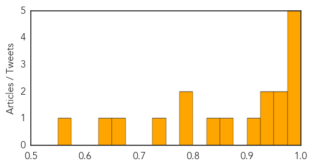

Dengue Fever
30-Day Web Trend
19 alerts, 7 warnings

30-Day Twitter Trend
0 alerts, 0 warnings

Article Locations

Article Confidences
Top Articles:
- 0.997
- After Delhi, Rajasthan worst affected. Number of dengue cases reach 1931
- 0.996
- Dengue fever spreads throughout Vietnam, claiming 28 lives
- 0.991
- Dengue, malaria cases rise in Rajasthan, separate OPDs set up
- 0.986
- DOH: Rise of dengue cases not epidemic
- 0.981
- El Nino Linked to Dengue Epidemic Shows New University of Pittsburgh…
- 0.970
- Dengue cases nearing 100,000 mark – DOH
- 0.962
- Vietnam dengue outbreak grows, pushes hospitals to the limit
- 0.946
- 92,000 dengue cases in 9 months
- 0.943
- Pvt hosps lax in sharing dengue data
- 0.915
- Weather ailments go viral
- 0.871
- SurSur IPHO keeps close watch on dengue
- 0.829
- São Paulo Takes Drastic Step to Prevent Dengue Outbreak
- 0.798
- With 570 cases, Ludhiana battles to fight dengue
- 0.780
- Senator Nancy wants Senate Inquiry on Dengue
- 0.725
- Health Min for developing mechanism to ascertain dengue data
- 0.663
- MMDA chief urges LGUs to intensify anti-dengue ops
- 0.643
- Travel history aids in pediatric illness diagnoses at ED
- 0.572
- Cebu News, The Freeman Sections, The Freeman
Top Tweets:
- 0.725
- Flavivirus news: Amid dengue crisis, Delhi govt prepares for swine flu - Daily News & Analysis:... http://t.co/RMlCQ0vE1U pathogenposse
Influenza
30-Day Web Trend
6 alerts, 5 warnings

30-Day Twitter Trend
0 alerts, 0 warnings

Article Locations

Article Confidences

Top Articles:
- 0.999
- October Marks Start Of Flu Season
- 0.998
- Doctors anticipate nasty flu season
- 0.997
- Flu Shots Keep People Out of Hospital
- 0.997
- Flu-associated pneumonia tied to skipped flu vaccine
- 0.986
- What you need to know about this year's flu vaccine
- 0.981
- Seasonal illness on the rise, wash your hands
- 0.980
- FDA Clears the Focus Diagnostics Simplexa™ Flu A/B & RSV Direct Test to Include 53 New Virus Strains for the 2015-2016 Flu Season
- 0.978
- Flu Vaccine Helps Reduce Hospitalizations Due to Influenza Pneumonia
- 0.960
- Focus Diagnostics receives FDA clearance for flu, RSV test
- 0.958
- Get flu vaccine now, says Luxembourg's Health Ministry
- 0.955
- News Scan for Oct 06, 2015
- 0.940
- Studies Find Flu Vaccines Can Harm Your Heart, Infant And Fetus
- 0.925
- Flu Season Begins: Authorities Predict a Tough One
- 0.904
- Flu vaccine expected to be more effective this year
- 0.885
- Today's stories from newspapers in North Bay Nipissing
- 0.881
- Summit, Apache County Public Health offering free flu shots
- 0.872
- Howell County Health Department to host flu shot clinics –
- 0.776
- Nurse Flu Shot Compliance Reverberates Through Community
- 0.751
- October 6, 2015 Archives
- 0.751
- October 6, 2015 Archives
- 0.716
- Tough lessons learned from bird flu outbreak
- 0.584
- Today's stories from newspapers in Halton Hills
- 0.547
- New flu mapping system developed by Valley ER doctor
Top Tweets:
-
No tweets found for Oct 06, 2015